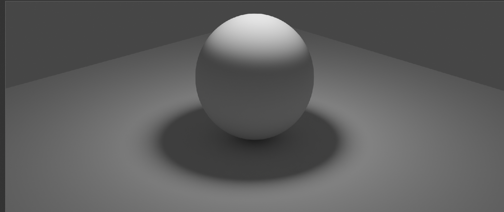

Blender is a free and open-source 3D computer graphics software tool set used for creating animated films, visual effects, art, 3D-printed models, motion graphics, interactive 3D applications, and virtual reality.
One of the first renders we did with a simple sphere and light source
In this next render, we gave the sphere a material which made it blue and then rendered it with 2 different engines, Eevee and Cycles. Eevee takes less time to render but does not render as good as the Cycles render. In the Cycles render on the right, the shadow has a bluish tint because Cycles has better rendering in exchange for longer render times.
In our next render, we started doing animations. First we applied materials to a sphere and then keyframed where we wanted the sphere and camera to be at certain frames.